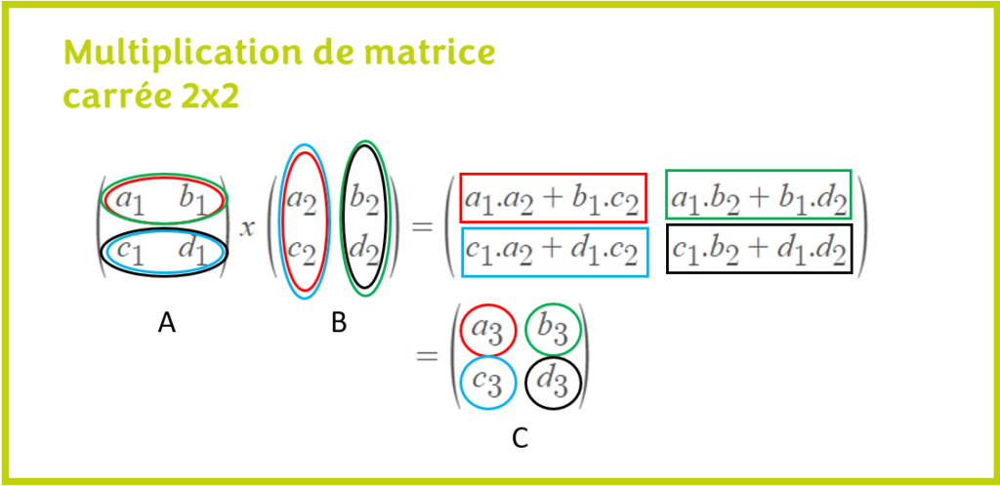

brute force O(2^n)
def fibonacci_recursif(n):
if n <= 0:
return 0
elif n == 1:
return 1
else:
return fibonacci_recursif(n-1) + fibonacci_recursif(n-2)
memoization
def Fibonacci_memoization(n, memo):
global numCalls
numCalls += 1
print 'fib1 called with', n
if not n in memo:
memo[n] = fastFib(n-1, memo) + fastFib(n-2, memo)
return memo[n]
def fib1(n):
memo = {0:1, 1:1}
return fastFib(n, memo)
Dynamic Programming (DP) O(n)
def fibonacci_iteratif(n):
if n <= 0:
return 0
elif n == 1:
return 1
a, b = 0, 1
for _ in range(2, n + 1):
a, b = b, a + b
return b
la plus belle solution par matrice O(log (n))
def produit(A,B):
m=10**9+7
return [
[
(A[0][0] * B[0][0] + A[0][1] * B[1][0])%m,
(A[0][0] * B[0][1] + A[0][1] * B[1][1])%m
],
[
(A[1][0] * B[0][0] + A[1][1] * B[1][0])%m,
(A[1][0] * B[0][1] + A[1][1] * B[1][1])%m
]
]
def fibonnacci(n:int):
F=[[1,1],[1,0]]
R=[[1,0],[0,1]]
while n>0:
if n%2==1:
R=produit(R,F)
F=produit(F,F)
n=n//2
print( R[1][0]%(10**9+7))
fibonnacci(int(input()))
on a f(1)=[[1,1],[1,0]]=[[f(2),f(1)],[f(1),f(0)]]
r=[[1,0],[0,1]] l'identite
produit de 2 matrices

F=[[1,1],[1,0]]
R=[[1,0],[0,1]]
n=11
n>0=>11%2=1=>R=F*R=F
F=F^2=>n//2=5
F=[[1,1],[1,0]]
R=[[1,1],[1,0]]
n=5
n>0=>5%2=1=>R=F*R=[[1,1],[1,0]]^3
F=[[1,1],[1,0]]^4=>n//2=2
F=[[1,1],[1,0]]^4
R=[[1,1],[1,0]]^3
n=2
n>0=>2%2=0
F=[[1,1],[1,0]]^8=>n//2=1
F=[[1,1],[1,0]]^8
R=[[1,1],[1,0]]^3
n=1
n>0=>1%2=1=>R=F*R=[[1,1],[1,0]]^11
F=[[1,1],[1,0]]^16=>n//2=0
R[1][0]est le fib de 11
==> in python ==> (a ^phi(m)) % m = 1 how to calculate phi(m) ?
ϕ(m)=m×(1− 1/p1)×(1− 1/p2)×…